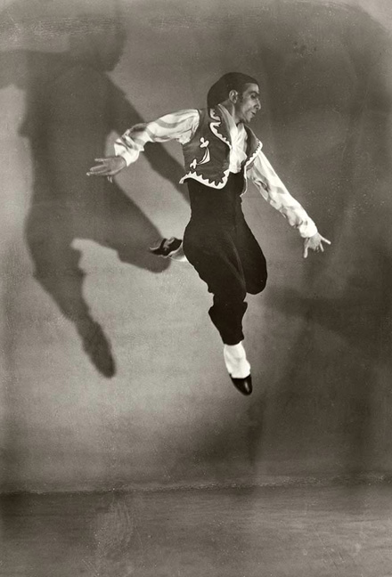

Όταν η συμπάθεια σβήνει, σβήνει και η μνήμη.
Γκαίτε
| |
Τα παιδιά είναι ο πλούτος των φτωχών.
| |
Όταν έμαθα ότι ο αρχιεπίσκοπος δηλητηριάστηκε, σκέφτηκα : θα κατάπιε καμία από τις αρχές του.
Ριβαρόλ
| |
-Πρώτη και μοναδική αρχή της σεξουαλικής ηθικής, ο κατήγορος έχει πάντα άδικο.
THEODOR ADORNO
[download mp3: yusef_latef] | |
Ο ποιητής στην ιστορία είναι θεϊκός. Ο ποιητής της διπλανής πόρτας αστείος.
Eastman
| |
Τα γηρατειά δεν είναι και τόσο άσχημα αν σκεφτείς τις εναλλακτικές λύσεις που έχεις.
Maurice Chevalier
| |
Απαγόρευσε το δικαίωμα να λες «γαμώ» και απαγορεύεις αυτομάτως το δικαίωμα να πεις «γαμώ την κυβέρνηση»
Lenny Bruce
| |
Παιχνίδι στο σεξ είναι να χρησιμοποιείς το φτερό. Ανωμαλία είναι να χρησιμοποιείς ολόκληρη τη κότα.
Ανώνυμος
| |
πανέτοιμοι οι διαδηλωτές για την σημερινή πορεία. | |
Σε επιφυλακή και τα σώματα ασφαλείας ενόψει της πορείας. | |
Η ταχύτητα με την οποία αναπτύχτηκε το στρατιωτικό ένστικτο σε αυτό το έθνος των εφοπλιστών, των εμπόρων και των καταστηματαρχών είναι γνωστή. Ενδιαφέρονταν για ένα μόνο πράγμα : την καταστροφή της ανθρωπότητας για φιλανθρωπικούς σκοπούς και την τελειοποίηση των όπλων που τα θεωρούσαν εργαλεία του πολιτισμού!
Ιούλιος Βέρν (1865)
| |

Αυτός ο παράδοξος τύπος με τον περιπαθή μύστακα, ξεσκόνιζε δουλικά τον πάμπλουτο Γκλένκο, αλλά με τόσο υπερβολικό τρόπο που όσοι ήταν μπροστά πίστευαν πως μάλλον τους δούλευε. Με αυτόν τον τρόπο, ποτέ δεν εξέθεσε την ακεραιότητα του χαρακτήρα του.
Χ.Λ.Μπόρχες
| |
Σαν πεθάνω από συνάχι,
η πανούκλα μούντζες νάχει.
Μεσαιωνική παροιμία
| |
Αληθινός φιλόσοφος είναι όποιος συγχωρεί στην κοινωνία την φτώχεια του το ίδιο γαλήνια όσο και ο πλούσιος τραπεζίτης συγχωρεί στη φύση τη βλακεία του.
Ριβαρόλ
| |
Κάποτε...όταν ο λευκός κατακτητής έδιωχνε από τους κυνηγότοπους,
τους ερυθρόδερμους, εκείνοι, έσχιζαν το δέρμα τους για να ξεριζωθεί το πνεύμα τους και να παραμείνει κοντά στη γη όπου είχαν θαμμένους τους νεκρούς τους.
Περνούσαν ένα κομμάτι δέρμα μέσα στο κρέας τους και σκαρφάλωναν πάνω σε ένα ψηλό πάσσαλο. Έδεναν το δέρμα σε ένα σχοινί και έπεφταν στο κενό.
Πιο κοντό το σχοινί...λίγο πριν βρεθούν στο έδαφος, έσχιζε βίαια το δέρμα και έβγαινε από μέσα τους η ψυχή τους για να παραμείνει εκεί μαζί με τα αγαπημένα πρόσωπά τους. | |
Χωρίς καμιά φιλοδοξία
αφήνω τη φύση μου να κυλά όπου θέλει
έχω ρύζι για δέκα μέρες μέσα στο σάκο μου
και πλάι στο τζάκι ένα δεμάτι ξύλα.
Ποιος να μωρολογήσει για εκλάμψεις και νιρβάνα;
Ξεχνώ τις σκόνες που τις λένε «όνομα» και «μέλλον»
ακούω της νύχτας τη βροχή πάνω στη στέγη της καλύβας μου
βρίσκομαι σε γαλήνη και
έχω τα πόδια μου και τα δύο απλωμένα.
Ριοκάν (1800 μ.χ.)
| |
Μάταια έχω ψάξει για έναν τέλειο ουρανό
φτιάχνοντας ένα φράχτη γύρω μου .
Έτσι μια μαύρη νύχτα παίρνοντας
ένα μεγάλο τούβλο, συνέτριψα
το σκελετό του κενού.
Μούσου (1300 μ.χ.)
| |
Στο οτιδήποτε που έκαμε
τη γη σα βάση του
τον κόσμο σα ζωή του και τον άνεμο
σα μαξιλάρι του
κι έφτιαξε το λωτό και το φεγγάρι και
έκλεισε όλα ετούτα μέσα στα πέταλα
του ουρανού
(κλείνοντας και τον εαυτό του μέσα)
Σε ετούτο το μυστήριο το ανάλλαχτο στις αλλαγές.
Ντεβαρά Ντασιμάγια (Ινδία)
| |
Γέμισε φύλα η αυλή
οι σκαλιστοί θεοί έφυγαν
Matsuo Basho (1600 μ.χ.)
| |

Ο κύκλος όλου του νοήματος
ούτε έξω ούτε μέσα
ούτε σκιά, ούτε φώς
Όλοι οι άγιοι εδώ έχουν γεννηθεί.
Σοϊ Τσί
| |
Μεγάλη μέρα
ωκεάνια άμμος
τα ίχνη σβήνουν.
Μασαόκα Σίκι (1900)
| |
Γραμμές του τραίνου
άγριες χήνες πετούν
από πάνω τους.
Μασαόκα Σίκι (1900)
| |
Ο δρόμος
πίσω μια σειρά αποθήκες
και χελιδόνια.
Matsuo Basho (1600 μ.χ.)
| |
Έρημο βουνό, δεν φαίνεται άνθρωπος
αλλά ακούγεται ανθρώπινη φωνή
ηλιαχτίδα φθάνει βαθιά μέσα στο δάσος
και αντανακλά σε πράσινα βρύα
Wang Wei
| |
Μάης, άνεμος ˙
Μια χάρτινη σημαία :
Το απέραντο.
Iwaya Sazanami (1800)
| |
Το απόγευμα τραβάει ολομόναχο
το δρόμο
Matsuo Basho (1600 μ.χ.)
| |

Οι προσευχές τρίζουν
στα γέρικα χέρια
Matsuo Basho (1600 μ.χ.)
| |
|
35 readers online
|